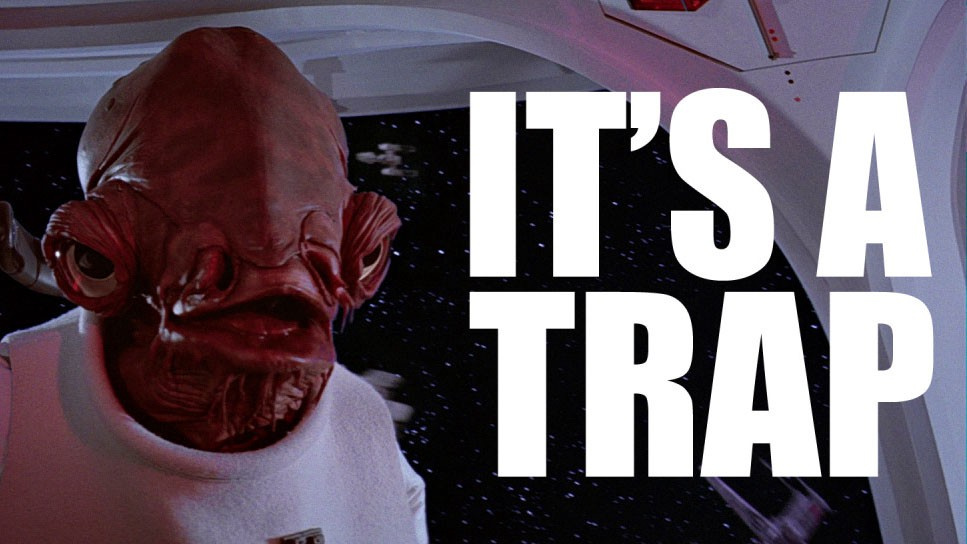
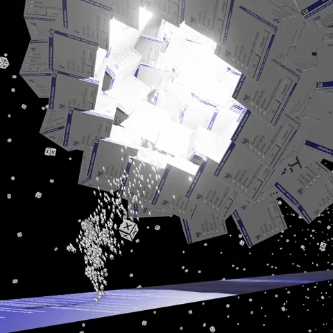

Важность отказа от модальных окон в пользовательских интерфейсах: как они снижают конверсию и вызывают негативную реакцию
В мире веб-дизайна и разработки пользовательских интерфейсов модальные окна часто используются для привлечения внимания пользователей к важной информации или для выполнения определенных действий. Однако с течением времени стало очевидно, что модальные окна могут не только снижать конверсию, но и вызывать негативную реакцию у пользователей. В этой статье мы рассмотрим, почему стоит избегать использования модальных окон и какие альтернативы могут улучшить пользовательский опыт и повысить конверсию.
Что такое модальное окно?
Модальное окно — это всплывающее окно, которое временно блокирует основной контент на странице, требуя от пользователя взаимодействия, прежде чем он сможет продолжить работу с основным содержимым. Обычно они используются для отображения уведомлений, форм подписки или подтверждений.
Почему модальные окна снижают конверсию?
-
Прерывание пользовательского потока:
Одной из главных причин, по которой модальные окна могут снижать конверсию, является их способность прерывать поток пользовательского взаимодействия. Когда пользователь сосредоточен на выполнении определенной задачи, внезапное появление модального окна может вызвать раздражение и даже заставить его покинуть сайт. Это особенно верно для пользователей, которые просто хотят быстро получить доступ к информации или совершить покупку.
-
Создание негативного пользовательского опыта:
Модальные окна часто воспринимаются как навязчивые и раздражающие элементы интерфейса. Они заставляют пользователей выполнять нежелательные действия, такие как закрытие окна или выполнение дополнительного клика, что может вызвать негативное отношение к вашему бренду или продукту.
-
Проблемы с доступностью:
Для пользователей с ограниченными возможностями модальные окна могут представлять собой серьезное препятствие. Они могут быть труднодоступны для навигации с помощью клавиатуры или экранных читалок, что делает ваш сайт менее инклюзивным и недоступным для всех пользователей.
-
Замедление времени загрузки:
Модальные окна могут увеличить время загрузки страниц, особенно если они содержат тяжелые элементы, такие как изображения или видео. Это может негативно сказаться на пользовательском опыте и привести к увеличению показателя отказов.
Альтернативные решения
К счастью, существует множество альтернатив модальным окнам, которые могут улучшить пользовательский опыт:
-
Ненавязчивые уведомления:
Используйте ненавязчивые уведомления или баннеры, которые появляются в верхней или нижней части экрана. Они не блокируют основной контент и позволяют пользователям самостоятельно решать, когда с ними взаимодействовать.
-
Инлайн-контент:
Встраивайте важную информацию непосредственно в контент страницы. Это позволяет пользователям видеть информацию естественно, без прерывания их взаимодействия с сайтом.
-
Боковые панели:
Боковые панели могут быть использованы для отображения дополнительной информации или действий, не блокируя основной контент. Они позволяют пользователям контролировать, когда и как взаимодействовать с дополнительными элементами.
-
Улучшенные формы:
Если необходимо собрать информацию, используйте хорошо продуманные формы, которые интегрированы в основной контент и не требуют всплывающих окон.
Заключение
Модальные окна, несмотря на их популярность, могут значительно ухудшить пользовательский опыт и снизить конверсию. Переход на более ненавязчивые и доступные методы взаимодействия с пользователями может существенно улучшить ваше взаимодействие с клиентами и повысить удовлетворенность пользователей. В конечном итоге, это приведет к более высокой конверсии и положительному восприятию вашего бренда.

Привет! Я — бесячая модалка!
Я перекрываю контент, а ещё у меня неправильная реализация
Ещё у меня есть <input>, которое можно заполнить: